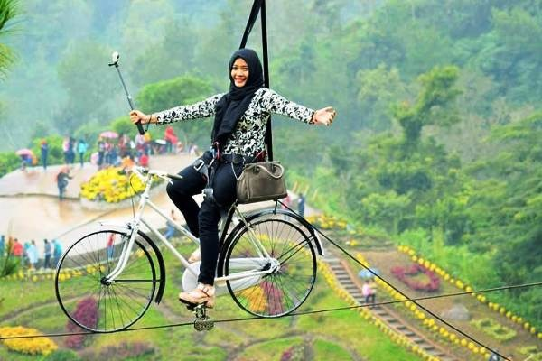
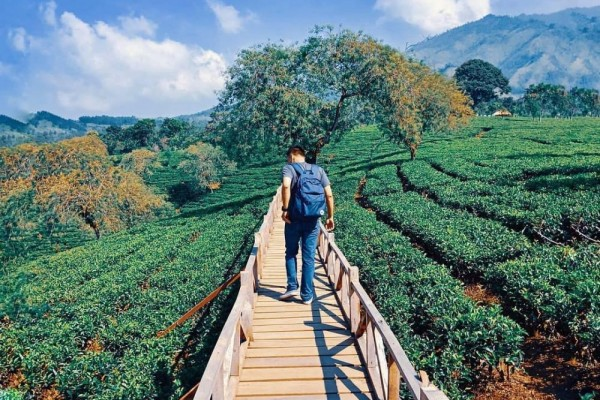
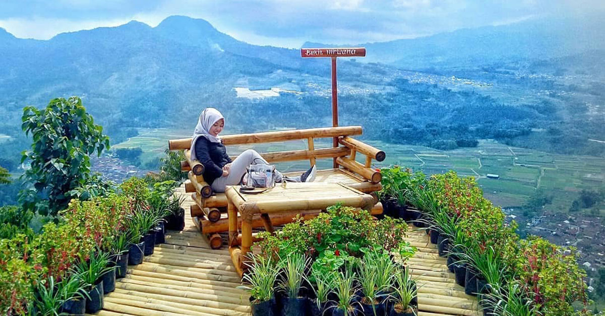
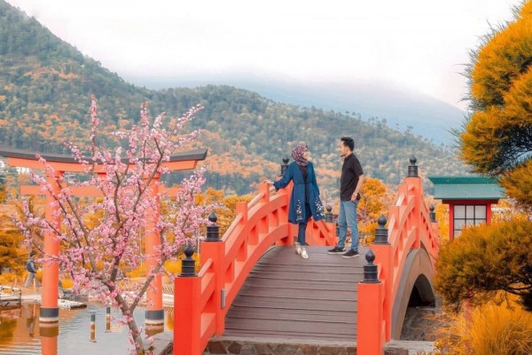
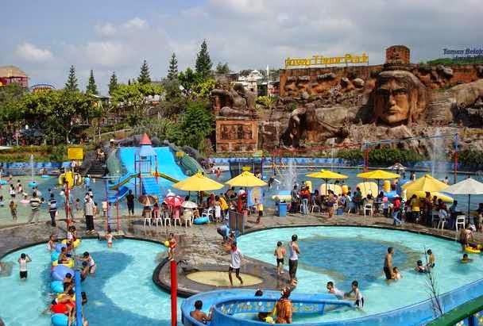
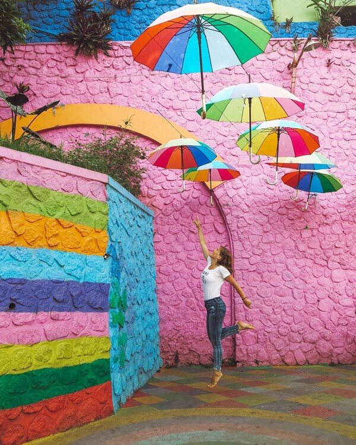
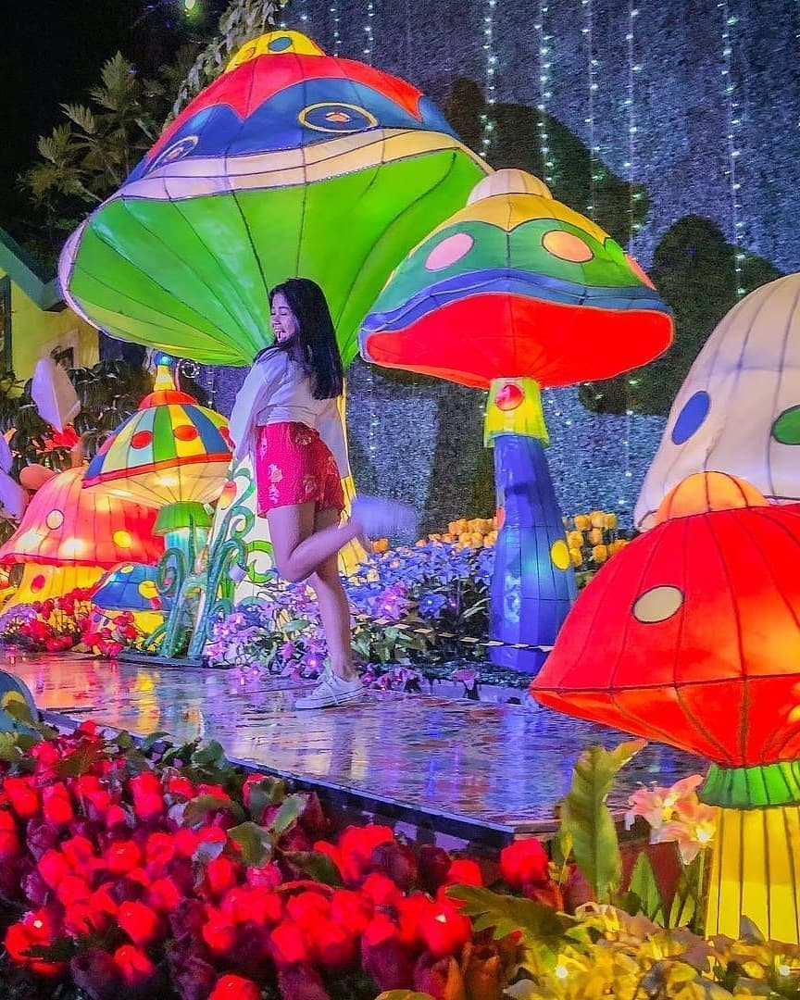

|TOUR MALANG|







Malang Travel Guide Tour & Organizer berdiri pada tahun 2008 di kota Malang, kami hadir dalam mendukung pengembangan pariwisata Jawa Timur dan Utamanya tour malang. Kota Malang yang awalnya hanya menjadi kota ke 2 di Jawa Timur kini hadir dengan potensi wisata baru, meliputi wisata malang, wisata batu, wisata bromo maupun wisata malang selatan yang tergabung menjadi wisata malang raya. Potensi paling besar saat ini adalah wisata kota batu yang menyajikan banyak pilihan obyek wisata mulai dengan adanya Jawa Timur Park Group yang meliputi obyek wisata : Jatim Park 1, Jatim Park 2, Jatim Park 3, Museum Angkut, BNS, Eco Green Park dan juga Predator Park. Sedangkan obyek wisata lain di kota batu diantaranya Batu flower Garden, Paralayang dan banyak lagi lainnya.